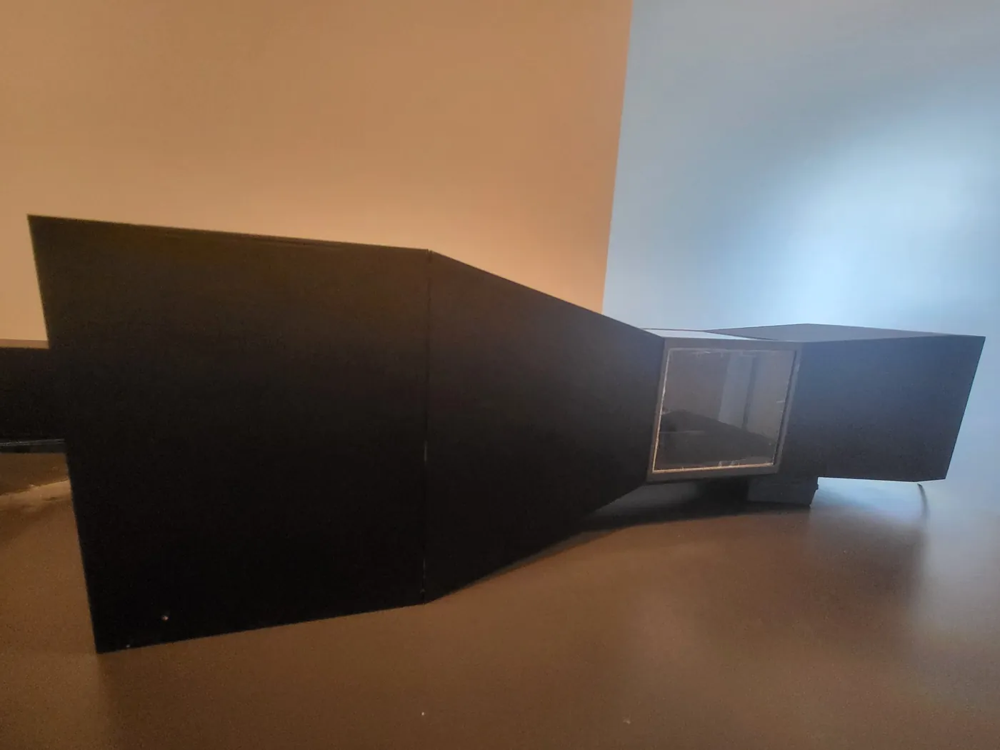
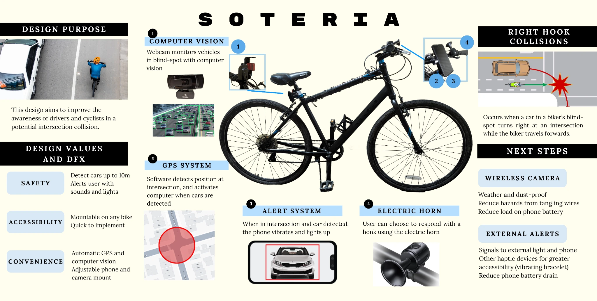

03 · Engineering projects
Prototypes, software, and human-centred design.
Independent and academic projects built around iteration, testing, and the engineering decisions that connect an idea to a working system.

Desktop Wind Tunnel
Designed and built a compact suction wind tunnel, redesigning its honeycomb flow straightener after the first low-blockage version proved too fragile to print and install reliably.
View project ↗
Soteria
Team-developed right-hook warning prototype combining OpenCV, GPS gating, a mobile alert, and bike-mounted hardware, with Praxis II emphasis on requirements, documentation, verification, and design communication.
View project ↗400+ N structures
human-centred design
solar mechatronics
Other Academic Projects
A collection of smaller projects spanning seam-carving in C, a 400+ N cardboard bridge, Praxis I electronic-pen accessibility concepts, and a light-responsive self-cleaning solar-panel system.
View projects ↗